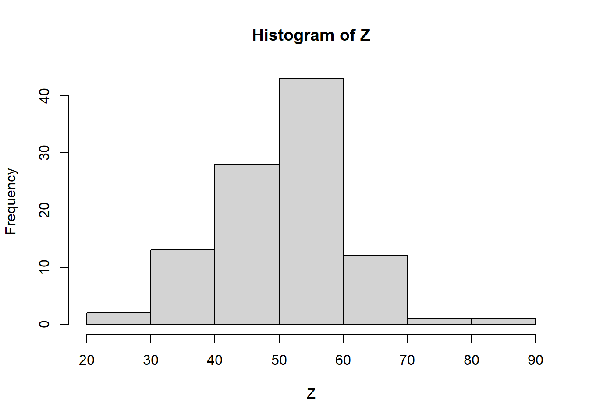
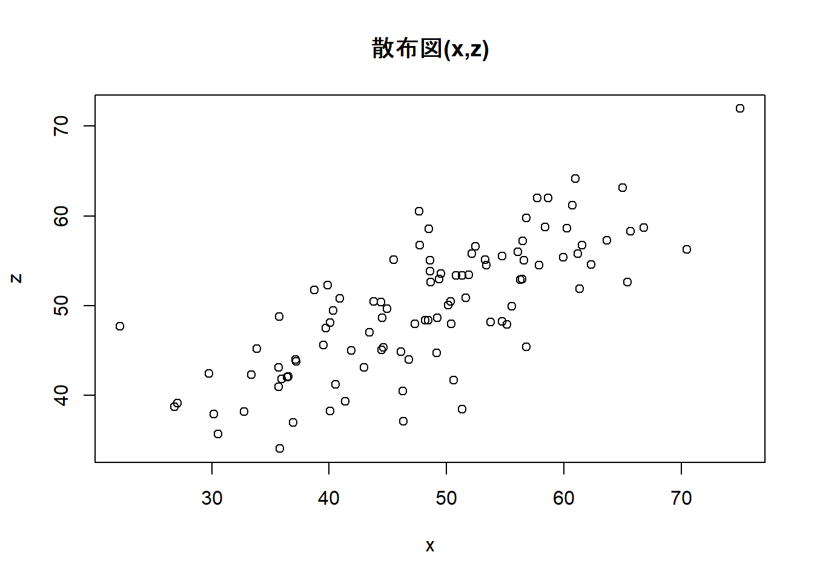
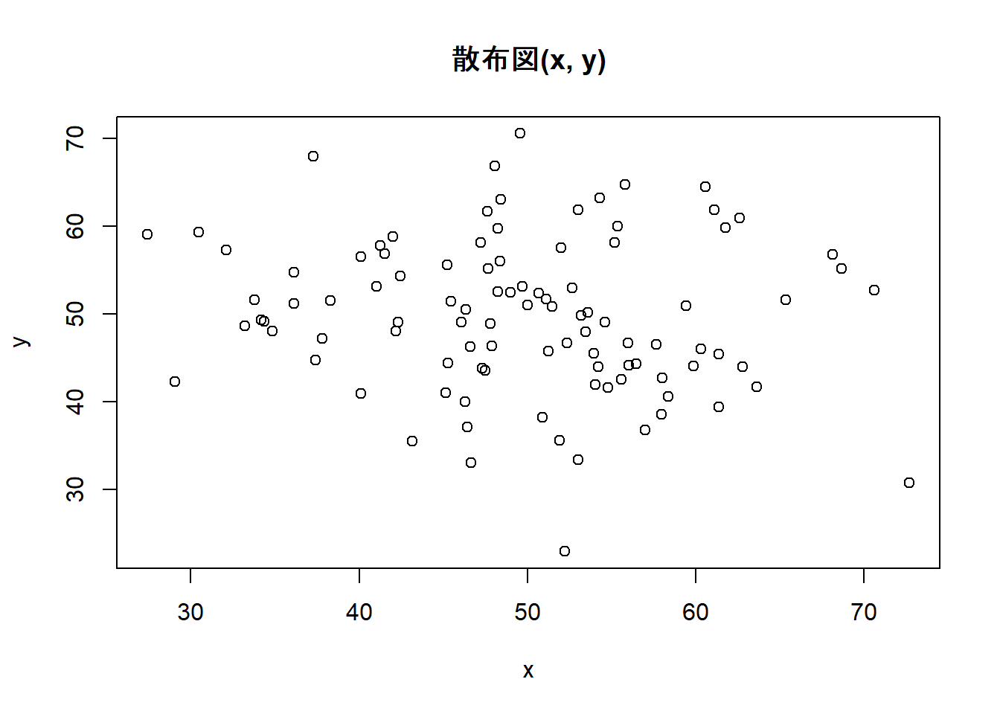
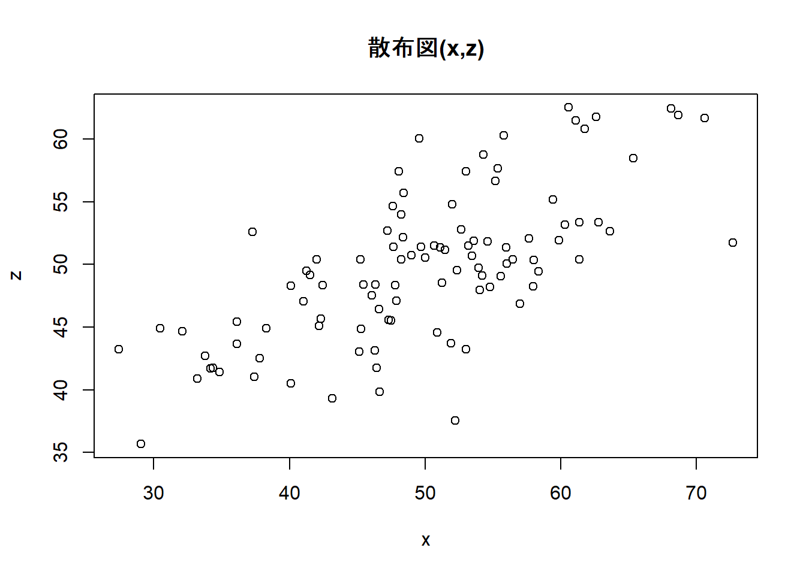
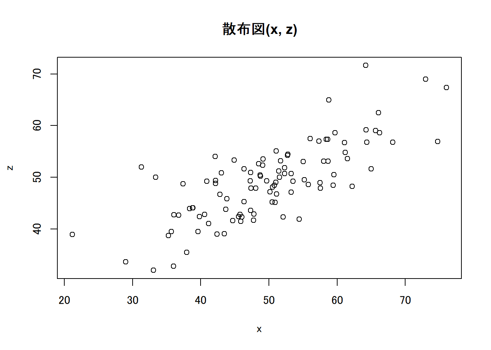
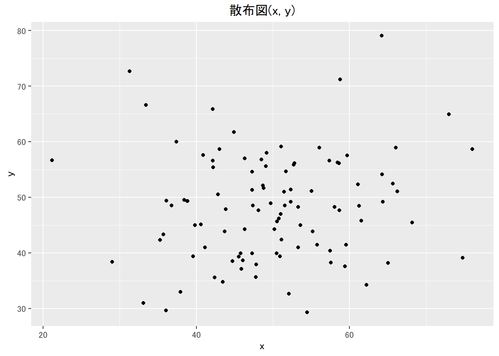
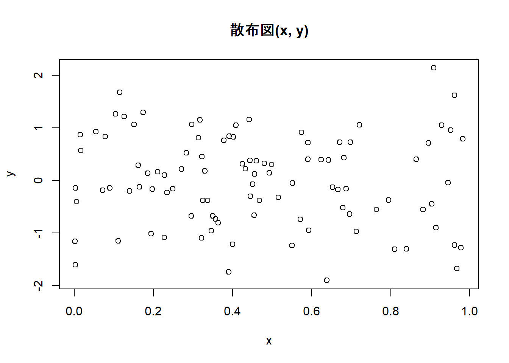
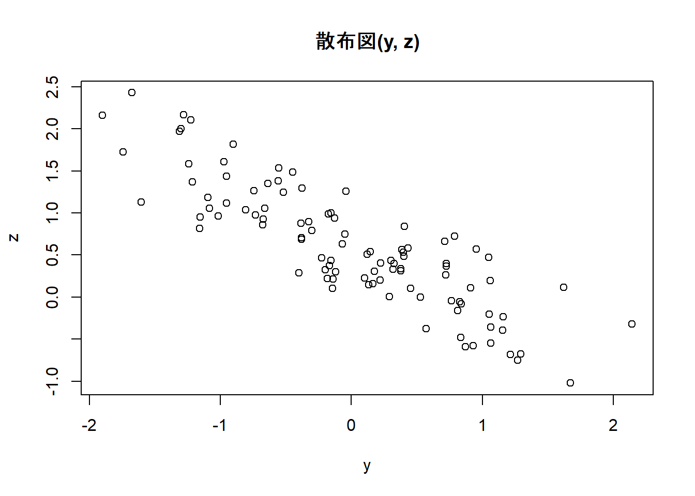

Week2 | Rによる自主勉強会
伊﨑 直志
2023年10月13日
準備
Loading Packages
library(tidyverse)## Warning: パッケージ 'tidyverse' はバージョン 4.1.3 の R の下で造られました## -- Attaching packages --------------------------------------- tidyverse 1.3.2 --
## v ggplot2 3.3.5 v purrr 0.3.4
## v tibble 3.1.8 v dplyr 1.0.10
## v tidyr 1.2.0 v stringr 1.4.0
## v readr 2.1.2 v forcats 0.5.1## Warning: パッケージ 'ggplot2' はバージョン 4.1.2 の R の下で造られました## Warning: パッケージ 'tidyr' はバージョン 4.1.3 の R の下で造られました## Warning: パッケージ 'readr' はバージョン 4.1.3 の R の下で造られました## Warning: パッケージ 'dplyr' はバージョン 4.1.3 の R の下で造られました## -- Conflicts ------------------------------------------ tidyverse_conflicts() --
## x dplyr::filter() masks stats::filter()
## x dplyr::lag() masks stats::lag()windowsFonts(family_sans = windowsFont("Noto Sans JP"))
par(family="family_sans")
knitr::opts_chunk$set(echo = TRUE)第１章 回帰分析の目的
1.1. 相関と因果
相関関係 correlation：「Xが変化すればYも変化する」
因果関係 causality：「Xを変化させればYも変化する」
疑似相関 spurious correlation
「変数XとYに共通の第3の要因Zが存在することによってXとYに生じる見せかけの相関関係」
e.g. 個人所得の増加→タバコへの支出増加、医療・健康への支出増加 ＝タバコと健康の疑似相関
- 時間的先行性: 原因となる現象が結果となる現象に時間的に先立って起きている。
- 共変関係（相関関係）: 原因となる現象が変動すると、結果となる現象も変動する。
- 他条件の同一性: 原因となる現象の双方に与える現象は存在しないか、その影響は統制されている。
1.2. 回帰と予測
一次関数 \(y=a+bx\) の形で表現 →最小二乗法（least squares estimation）（図1.1 →図1.6）
回帰直線、回帰式、回帰係数
回帰式の一方の変数に代入してもう一方の変数の値を計算、予測
＝ある変数Xの値をもとにして、他の変数Yの値を予測 ＝回帰分析
X：説明変数、Y：被説明変数
⇒因果解釈ではなく、あくまで予測解釈！
回帰分析 →Xが与えられた時のYの値の予測
1.3. 自然科学のデータと社会科学のデータ
実験の難しさ（費用等コスト、倫理）
⇔自然科学：変数選択の制約・影響少、実験室実験可（変数統制） [従来的説明]
→現在、社会科学における実験多数：実験経済学等 or 自然実験…（後述）
第２章 統計の基礎知識
2.1. 母集団と標本
-（有限集団全体）母集団－（抽出）標本 - （確率分布）母集団－（観測値）標本 （←本書）
正規分布 normal distribution
正規分布\(N(平均, 分散=標準偏差^2)\)
正規分布（乱数）: rnorm(個数, 平均, 標準偏差)
rnorm(100, 50, 10) ## [1] 35.93929 62.96980 53.64837 52.33490 58.14878 54.16289 28.11581 44.57119
## [9] 41.50061 44.27308 55.05169 57.15525 52.64184 40.46511 31.96095 46.65141
## [17] 59.28044 59.56851 55.81240 53.36610 50.39071 60.29565 42.92952 38.82058
## [25] 45.50154 68.75780 51.93638 41.95059 63.93872 50.94766 52.01190 38.50556
## [33] 75.11927 60.56445 52.75162 49.15686 68.94022 46.07838 42.99681 37.83998
## [41] 73.42436 69.99334 38.65261 45.87766 54.21329 47.78319 46.75173 51.33852
## [49] 57.29547 60.36497 44.94809 50.27661 56.36280 52.62565 49.40616 52.48120
## [57] 39.46169 24.63558 42.21066 58.87296 48.48917 72.53186 57.00364 61.14653
## [65] 55.37862 34.46078 55.95618 46.16518 48.53639 50.86910 58.98922 52.75958
## [73] 54.39664 63.35361 64.89511 47.68283 54.24177 61.06314 50.72539 59.46037
## [81] 34.90015 33.31261 32.30080 36.64418 44.64228 44.33439 44.72425 58.50692
## [89] 47.77842 32.18424 40.01841 61.35483 47.67599 39.97092 52.21774 59.44904
## [97] 45.22052 59.78570 53.32808 56.68686curve(dnorm(x, 50, 10), 0, 100) #正規分布のグラフ描画
pnorm(60, 50, 10) #大きさ１の標本の値が60より小さくなる確率## [1] 0.8413447| 命令 | 説明 | （英略） |
|---|---|---|
rnorm(n, a, b) |
平均a, 標準偏差bの正規分布乱数をn個発生させる。 | random+norm |
dnorm(x, a, b) |
平均a, 標準偏差bの正規分布について, 密度関数の点xにおける値を計算する。 | density+norm |
pnorm(x, a, b) |
平均a, 標準偏差bの正規分布について, 分布関数の点xにおける値を計算する。 | probability+norm |
正規分布グラフ 描画関数
curve(dnorm(x, a, b), min, max) #curve(関数の式,
横軸の最小値, 横軸の最大値)
2.2. 無作為抽出
母集団から標本を抽出（random sampling）
rnorm(100, 50, 10)## [1] 51.23795 66.29710 57.84671 32.83202 62.59212 34.88376 28.53404 54.57232
## [9] 54.81864 58.56241 33.88957 48.18824 42.90549 54.72733 41.20282 55.90380
## [17] 65.92919 43.79686 48.04051 36.05063 65.10445 53.21646 47.98498 47.13947
## [25] 57.31325 37.35015 49.22823 27.13283 46.84054 64.10453 48.17396 50.97010
## [33] 72.40184 49.27716 50.74462 50.05734 56.08773 52.68217 39.62610 62.38980
## [41] 48.02837 56.12923 42.53717 56.71835 56.42062 55.03754 60.67549 62.07038
## [49] 41.62638 63.20556 52.52345 37.47519 64.30260 65.71662 18.77123 64.86930
## [57] 57.79679 60.35807 42.21159 54.76048 42.17462 32.08998 50.54676 43.49960
## [65] 48.99577 26.27305 50.14742 49.45448 48.11337 48.15543 57.14745 40.43476
## [73] 33.71913 36.16352 66.67549 45.44730 34.26588 32.52213 63.71453 52.86618
## [81] 55.09212 51.45182 50.89671 52.40161 68.12254 59.86261 41.62631 36.17115
## [89] 49.17446 48.70362 41.24169 54.62055 53.22498 59.98223 51.39656 68.89145
## [97] 44.03086 50.48836 53.27015 39.76836Z <- rnorm(100, 50, 10)
Z## [1] 47.67837 56.59399 43.35641 54.08509 54.66424 50.92919 64.24750 52.17772
## [9] 58.48843 45.58163 60.42525 45.84808 61.82268 28.09818 57.29832 39.95292
## [17] 36.84954 30.12984 52.18827 31.16268 57.96805 59.58790 51.49131 63.79795
## [25] 56.17449 33.52828 41.47245 49.21992 60.37062 41.56909 58.57142 46.96458
## [33] 52.40788 45.81264 52.09323 60.59787 48.71642 45.40763 64.80170 40.91705
## [41] 49.09058 56.03599 31.68239 48.37323 45.96678 46.39098 61.18937 51.92043
## [49] 46.94104 44.87683 38.92992 50.28996 60.22198 52.19956 49.35483 39.64358
## [57] 37.47501 49.36682 57.15458 46.00088 57.42533 45.04178 26.80172 47.86906
## [65] 49.93228 64.15798 46.46102 59.54004 42.63644 55.72772 37.90414 52.25406
## [73] 50.26375 51.99995 40.57453 42.86318 39.00413 59.05638 56.06563 48.47315
## [81] 70.33293 45.51175 38.63665 44.91922 44.10766 51.41680 36.33071 43.38337
## [89] 40.67302 49.66068 54.32443 56.58128 36.92295 78.30535 49.94818 50.94454
## [97] 36.76532 58.35551 38.36222 48.11133hist(Z) #ヒストグラム
Z[1:10] #最初の10個のデータを抜き出し## [1] 47.67837 56.59399 43.35641 54.08509 54.66424 50.92919 64.24750 52.17772
## [9] 58.48843 45.58163a <- c(5, 10, 100)
Z[a] #5番目,10番目,100番目の位置にある数字を抜き出し## [1] 54.66424 45.58163 48.11133Z[c(5, 10, 100)] #aを使わずに同上の操作## [1] 54.66424 45.58163 48.11133#特定の意味を持つ数値を抽出
max(Z) #最大値## [1] 78.30535which.max(Z) #最大値の位置## [1] 94min(Z) #最小値## [1] 26.80172which.min(Z) #最小値の位置## [1] 63mean(Z) #平均値## [1] 49.138summary(Z) #基本統計量を一括表示## Min. 1st Qu. Median Mean 3rd Qu. Max.
## 26.80 43.23 49.29 49.14 56.09 78.311:10## [1] 1 2 3 4 5 6 7 8 9 10sample(1:10, 3) #無作為抽出、sample(範囲, 抽出個数)## [1] 10 1 3sample(Z, 5) #sample(標本, 抽出個数)## [1] 38.92992 59.05638 54.66424 50.94454 46.00088sample(Z, 5) #sample(標本, 抽出個数)## [1] 51.49131 42.63644 44.91922 51.41680 42.86318fruits <- c("ミカン", "バナナ", "リンゴ", "レモン", "モモ")
fruits## [1] "ミカン" "バナナ" "リンゴ" "レモン" "モモ"sample(fruits, 1) #fruitsから1個抽出## [1] "バナナ"sample(fruits, 2) #fruitsから2個抽出## [1] "モモ" "リンゴ"sample(fruits, 1) #fruitsから1個抽出## [1] "リンゴ"sample(fruits, 1) #fruitsから1個抽出## [1] "ミカン"コイン投げ1
coin <- c("Head", "Tail")
#sample(coin, 5) #うまくいかない ∵非復元抽出になっている
sample(coin, 5, replace = TRUE) #復元抽出, replace=TRUE## [1] "Tail" "Tail" "Head" "Tail" "Tail"2.3. 平均と大数の法則
- ①ベクトルrecのi番目の場所rec[i]に
- ②母集団N(50,10^2)から抜き出した大きさ100の標本の平均を格納する
mean(Z) #標本平均## [1] 49.138mean(rnorm(100, 50, 10))## [1] 50.68723mean(rnorm(100, 50, 10)) #Z<-rnorm(100,50,10)## [1] 51.92877#より多い試行、抽出1000回、標本の大きさ100
S <- 1000
rec1 <- numeric(S)
for(i in 1:S){rec1[i]<-mean(rnorm(100, 50, 10))}
rec1## [1] 50.41159 49.02813 50.12274 50.36849 49.55497 49.88194 49.52145 50.06396
## [9] 49.26072 52.35031 51.08978 51.18885 50.25372 49.03559 51.51932 50.11472
## [17] 51.16313 50.24173 49.04610 47.84278 49.47180 50.47761 50.40112 50.93347
## [25] 48.62875 50.10516 48.34199 50.30916 48.93476 49.76131 50.61793 48.90521
## [33] 49.84570 51.67521 49.23970 50.51333 49.62720 49.32072 50.85463 50.27938
## [41] 50.47347 49.44356 49.74944 49.78045 48.89503 49.42344 50.39686 50.15022
## [49] 49.44029 52.35942 49.21905 50.76601 50.30016 49.67653 50.56316 50.27611
## [57] 51.08475 50.12037 48.96546 50.05888 51.22079 51.03329 51.63289 50.36188
## [65] 49.84846 50.16408 49.24876 47.76568 50.61554 49.92599 49.43483 49.42347
## [73] 48.76694 51.74249 48.99100 49.79816 51.18748 51.69606 48.30071 50.49451
## [81] 49.13212 49.07152 50.21151 51.24158 50.57673 49.39389 52.82095 50.30880
## [89] 50.00921 51.80691 49.97885 49.02536 50.66109 49.60818 50.58632 48.63774
## [97] 49.36009 48.47914 49.66151 50.41093 49.38462 50.02428 48.96227 50.05799
## [105] 47.96521 49.39427 50.44773 48.54621 49.71573 50.41381 48.35301 48.93630
## [113] 50.11232 48.89119 49.24217 47.96741 49.74874 50.44746 50.42825 47.66438
## [121] 48.62601 48.24632 49.89035 49.35520 50.83955 51.78210 50.72315 52.22941
## [129] 49.70526 50.25741 49.96670 50.23341 48.87275 51.76825 50.31218 48.75372
## [137] 50.53112 51.04559 50.44244 50.34867 48.00590 52.19405 48.45644 49.45312
## [145] 50.50077 50.73842 49.74309 50.56203 48.39682 48.16369 48.72881 48.65073
## [153] 49.27668 50.86354 49.89700 48.90234 49.44037 49.73519 50.83909 49.92838
## [161] 49.52408 49.44471 49.69693 50.35436 51.04434 50.32785 48.48732 48.38240
## [169] 50.17488 51.08349 49.41209 50.62564 47.99788 49.81525 50.76436 49.43693
## [177] 48.73123 49.00440 50.20029 50.40179 50.58361 50.01281 50.05737 50.00791
## [185] 48.85016 49.74282 49.15712 50.75750 51.34407 51.21103 49.99700 50.32037
## [193] 50.79375 49.36398 48.03445 50.72236 47.90102 47.87057 48.93440 49.62764
## [201] 47.37696 50.57324 51.00084 50.83702 49.83486 52.42009 50.67373 50.62502
## [209] 50.72104 50.61309 50.04539 49.49602 48.80631 51.10153 49.45862 49.50698
## [217] 49.79778 49.51554 49.01397 49.22900 50.59886 48.79425 48.98776 48.31651
## [225] 49.44582 49.66023 51.01286 49.14590 50.89640 49.40155 50.27589 49.31910
## [233] 49.61988 50.08192 51.99820 52.02323 49.51852 50.23294 50.12411 50.15308
## [241] 49.00536 50.01538 48.08538 50.17278 50.98635 50.21972 52.75649 49.40395
## [249] 49.72852 49.07366 50.28237 48.11114 48.55550 51.10048 49.36912 49.52789
## [257] 48.89023 49.46440 49.57782 48.94865 50.89837 49.86020 51.11273 51.29495
## [265] 48.63942 49.35481 50.20758 49.73793 50.17100 51.43340 49.82980 49.59990
## [273] 49.51415 48.46696 48.93419 49.45333 50.08866 51.51601 50.95749 49.56115
## [281] 50.30341 50.00637 49.40846 50.62125 50.55430 49.87962 50.00203 49.25613
## [289] 51.45204 50.20775 48.91843 50.70027 50.25248 48.98840 50.16817 49.53646
## [297] 49.22414 48.83239 49.57735 49.71255 50.99695 49.11278 50.02230 51.42077
## [305] 50.97809 48.72568 49.12138 49.08741 50.87623 50.76423 49.85401 50.09003
## [313] 50.48783 48.74582 50.20692 49.57862 51.16439 49.95243 50.37852 51.62961
## [321] 49.05713 48.85316 49.71020 50.80681 49.37928 48.46525 50.17506 49.62479
## [329] 47.66832 49.20141 48.92188 49.93449 50.34156 50.42650 52.74821 51.78226
## [337] 47.99719 51.24545 49.31849 49.74171 49.71190 49.85166 49.16473 49.28795
## [345] 50.07108 51.37212 50.09555 50.65482 50.35992 51.02184 49.00799 50.31232
## [353] 50.58731 50.71373 50.01762 50.59859 48.89315 51.28249 50.54836 49.56347
## [361] 52.10942 48.27742 48.97207 49.76701 50.62690 49.93911 50.49750 49.20705
## [369] 49.35133 48.57722 50.10124 50.30715 50.50070 51.40772 51.22440 49.70649
## [377] 49.86607 50.48080 50.08088 48.57825 50.97566 51.80989 48.08235 51.48462
## [385] 48.87156 51.55416 49.46974 50.73051 49.75378 52.13240 50.42709 49.09166
## [393] 49.79967 49.04683 49.82831 50.22537 51.28034 50.01856 49.80072 47.64096
## [401] 49.45743 48.85312 50.06821 49.66759 50.06461 49.28275 49.33756 50.13224
## [409] 49.66688 49.38535 50.20087 50.85541 50.88875 50.62634 52.25840 48.83295
## [417] 49.31679 50.35086 49.99152 50.26461 49.23947 48.54898 50.09569 48.53212
## [425] 49.73006 49.82524 50.59892 49.48021 48.68165 48.80590 50.35087 50.00453
## [433] 50.84900 50.49862 47.95992 51.10547 49.82336 50.38073 49.67373 50.72242
## [441] 48.59663 50.70372 50.28722 49.31635 50.03194 50.63679 49.89969 50.33139
## [449] 49.45490 49.80000 52.66578 49.42792 49.66397 50.20334 48.86089 48.71862
## [457] 50.63315 49.16111 51.85322 49.83804 48.27972 50.01601 49.85358 49.43251
## [465] 50.13673 48.91767 51.85896 48.93624 51.19839 51.39861 51.62973 50.98939
## [473] 48.30077 50.83101 48.29627 50.30862 48.01243 50.64156 50.38132 49.85715
## [481] 49.02840 50.19854 49.91752 50.24474 49.45755 50.22765 51.10496 47.77393
## [489] 50.81834 48.81305 49.78224 50.01288 50.03875 49.99812 49.09939 52.30621
## [497] 50.52250 48.17447 50.41380 48.74294 48.38510 50.66450 49.44048 49.52029
## [505] 50.93514 49.79992 50.80283 51.04124 49.85610 49.08238 50.12617 50.86840
## [513] 49.42857 49.97222 50.02563 51.39258 50.35072 50.68172 49.16061 50.30021
## [521] 50.14956 50.90208 50.24217 50.97692 50.02510 50.73032 48.92932 50.03693
## [529] 50.36999 51.06620 51.62771 48.79606 47.89130 49.19542 50.00928 50.79708
## [537] 50.85977 51.54531 49.41357 51.08156 48.53011 50.58870 50.41210 49.64757
## [545] 49.75308 51.95711 49.00887 47.49940 48.83630 49.94081 50.81047 50.03793
## [553] 50.51486 50.51662 49.82222 51.58644 51.43920 50.47184 50.77569 50.07854
## [561] 49.00713 50.08544 51.58460 48.97982 49.95566 50.53882 51.14793 50.85951
## [569] 52.87143 49.64848 49.04787 49.30510 51.08104 50.99243 50.77156 49.38545
## [577] 50.23449 50.76490 50.22149 50.73177 49.22591 49.26735 50.71364 49.65529
## [585] 50.52374 51.96708 48.76329 50.89678 50.68181 50.03774 50.03399 50.16163
## [593] 50.73167 49.30105 50.26580 50.36596 50.51317 50.18574 50.63986 49.44748
## [601] 50.18507 51.79665 48.92046 48.93791 51.52216 49.25922 50.33144 49.85455
## [609] 50.51371 49.69397 48.07009 47.79235 50.19822 49.18586 49.79577 49.61388
## [617] 50.71464 48.05699 48.83154 50.64998 50.31992 47.47020 50.08384 49.25211
## [625] 48.25582 48.82578 48.76149 50.04501 49.57795 50.10636 49.98326 50.07927
## [633] 51.64812 49.69367 47.85830 49.21935 52.26673 49.68457 48.00882 47.79933
## [641] 50.44662 49.95125 49.76149 48.77529 50.45857 49.57117 51.42079 50.15666
## [649] 50.87882 48.90113 51.62748 51.43116 50.22838 51.38295 49.38229 48.91820
## [657] 49.75519 49.82309 51.36057 49.53763 47.96468 49.03017 50.02796 50.80540
## [665] 50.19270 50.90465 50.13072 50.44146 50.29518 49.55655 49.61299 50.27366
## [673] 51.96182 51.75047 48.66202 51.04675 48.83738 50.44296 48.89518 50.29244
## [681] 49.75328 50.09490 49.67387 49.36399 52.12231 51.24678 48.87834 50.98881
## [689] 50.29685 49.97942 50.04601 47.68546 48.64846 52.42855 50.06787 49.77732
## [697] 48.63697 50.83738 51.11066 50.72370 50.87931 50.85597 49.16030 48.87642
## [705] 50.83965 50.21229 48.78895 50.18467 48.95880 50.51207 50.09336 49.38643
## [713] 49.84919 50.01761 50.10082 50.24393 49.10994 50.94025 49.39318 51.53718
## [721] 49.85373 50.81971 50.01985 49.98366 51.40211 49.76945 50.63899 49.06711
## [729] 49.14587 48.32698 49.90575 49.26581 50.31159 49.19477 49.95194 49.08975
## [737] 50.98892 48.39577 50.68272 48.16409 48.96604 51.43618 49.10666 49.51492
## [745] 48.86412 50.68206 50.78685 50.96741 50.61228 49.65086 52.64044 51.39822
## [753] 49.97426 50.10966 48.87775 50.62661 50.40748 51.61612 49.43633 50.26653
## [761] 49.42963 50.12617 50.51900 49.77618 49.68254 48.46771 49.67140 50.84047
## [769] 50.32511 50.07038 50.95113 50.92654 49.50110 50.42219 50.03743 50.66821
## [777] 50.02827 50.04866 51.47980 49.24969 50.10228 48.72940 48.69901 50.78085
## [785] 51.94302 51.58931 49.25730 49.14451 50.57552 48.09225 49.40400 48.92760
## [793] 49.21868 52.18991 50.94216 49.16643 49.01220 48.06425 51.32109 48.87293
## [801] 49.37799 50.00951 48.47290 49.31433 49.67371 51.25260 49.75243 49.50109
## [809] 49.41752 50.73920 50.46545 50.36343 49.24746 49.84531 50.57774 50.37036
## [817] 49.75580 50.80251 50.24305 51.98254 49.08791 50.02458 48.42665 48.75760
## [825] 50.40829 49.30878 50.22589 51.27789 50.37846 51.38703 49.87209 48.22950
## [833] 49.25154 50.13124 50.27951 50.77178 50.65043 49.08676 48.05257 49.92698
## [841] 49.94800 49.41272 49.87224 51.21788 49.65760 50.56467 49.74017 49.01740
## [849] 49.59881 49.35353 50.90737 51.15666 49.99100 50.57135 48.29917 50.81484
## [857] 50.72564 50.48200 50.35530 50.77672 51.27620 50.13446 49.78594 50.95940
## [865] 50.93801 50.37322 49.76866 49.00681 51.69525 51.36680 48.34964 50.62035
## [873] 51.18790 46.48605 48.52681 50.78457 50.30907 50.32138 48.22437 48.24470
## [881] 50.23154 50.36139 51.48240 50.83228 50.39927 48.75191 50.99268 50.84155
## [889] 49.57929 50.03046 49.17145 50.30861 48.71866 48.85152 51.58454 50.74965
## [897] 49.01657 49.24242 50.84358 51.24291 50.53184 48.98862 50.11694 49.39357
## [905] 48.78983 50.97501 50.12646 51.74281 49.59966 49.90553 48.63937 50.12446
## [913] 51.18089 49.13177 49.89617 50.37417 51.20016 50.53465 48.76959 50.75450
## [921] 48.50979 49.07452 49.15155 50.30451 48.80679 48.69628 52.18866 51.22094
## [929] 50.39746 48.70600 50.46205 51.29309 50.50374 50.47913 50.19774 50.11078
## [937] 50.51878 50.10169 50.03176 50.41401 49.16248 49.52949 50.16097 48.91790
## [945] 50.44228 50.64640 51.63644 49.97332 50.86987 50.07778 50.12999 50.34416
## [953] 48.93537 50.18140 47.74145 48.09172 50.50077 49.32915 52.75035 48.33948
## [961] 48.98140 50.49357 48.45372 49.70034 48.68575 49.99196 50.76635 50.18352
## [969] 49.68466 50.84475 51.32714 49.00624 50.94828 49.05132 48.87848 48.43800
## [977] 52.63481 49.94402 48.46674 49.54632 49.22796 50.24520 50.22466 52.85393
## [985] 50.20891 49.99922 50.37392 48.95210 51.37993 49.01907 50.96841 50.45003
## [993] 50.38378 48.48935 51.20988 49.25727 51.46137 49.08150 50.20425 50.81707hist(rec1, main = "n = 100") #main = "n = 100", ラベルsummary(rec1)## Min. 1st Qu. Median Mean 3rd Qu. Max.
## 46.49 49.26 50.03 49.97 50.63 52.87【大数の法則】 母集団から無作為に抜き出された標本の平均値は、標本の大きさが大きいほど、母集団平均に近い値をとる。
サイコロ：母集団平均3.5
\(1*1/6+2*1/6+3*1/6+4*1/6+5*1/6+6*1/6=3.5\)
⇒大数の法則をスクリプトで確認
sample(1:6, 10, replace = TRUE) #サイコロを10回振る試行## [1] 6 1 2 2 3 1 4 5 1 5mean(sample(1:6, 1000, replace = TRUE)) #サイコロを1000回振った結果の目の平均値, 3.5に近似## [1] 3.532#サイコロ10回の標本平均×1000
S <- 1000
rec2 <- numeric(S)
for(i in 1:S){rec2[i] <- mean(sample(1:6, 10, replace = TRUE))} #サイコロ10回の標本平均×1000
summary(rec2)## Min. 1st Qu. Median Mean 3rd Qu. Max.
## 1.700 3.100 3.500 3.505 3.900 5.200#サイコロ1000回の標本平均×1000
S <- 1000
rec3 <- numeric(S)
for(i in 1:S){rec3[i]<-mean(sample(1:6, 1000,replace=TRUE))} #サイコロ1000回の標本平均×1000
summary(rec3)## Min. 1st Qu. Median Mean 3rd Qu. Max.
## 3.365 3.467 3.502 3.502 3.537 3.671#サイコロ10000回の標本平均×1000
S <- 1000
rec4 <- numeric(S)
for(i in 1:S){rec4[i] <- mean(sample(1:6, 10000, replace = TRUE))} #サイコロ1000回の標本平均×10000
summary(rec4)## Min. 1st Qu. Median Mean 3rd Qu. Max.
## 3.452 3.488 3.500 3.500 3.513 3.5652.4. 分散と標準偏差
var() |
分散 |
|---|---|
sd() |
標準偏差 |
標本平均 →標本のちらばり
- 分散 variance 標本が平均値を中心にどれだけ散らばっているかを表す指標
- 標準偏差 standard deviaton 分散の平方根、標本が平均値を中心にどれだけ散らばっているかを表す指標（同上） 参考
分散は、計算過程において２乗しているので観測データの単位と異なります。例えば観測データの単位がg（グラム）である場合、分散の単位はg2になります。そこで、分散の平方根である標準偏差を求めることによって、観測データとの単位を揃えることが出来ます。そうすることで、分散よりも扱いやすい値となります。 出典: 標準偏差の意味と求め方 | AVILEN AI Trend
#母集団N(50, 10^2)から大きさ1000の標本を無作為に抽出
x <- rnorm(1000, 50, 10)
var(x) #分散## [1] 104.6593sd(x) #標準偏差 #10に近似## [1] 10.23031#分散・標準偏差における大数の法則
#n = 1000
S <- 1000; n <- 1000
rec <- numeric(S)
for(i in 1:S){rec[i]<-sd(rnorm(n, 50, 10))}
summary(rec) #標準偏差10に近似## Min. 1st Qu. Median Mean 3rd Qu. Max.
## 9.280 9.856 10.004 10.001 10.147 10.756#より大きいサイズで確認
#n = 10000
S <- 10000; n <- 10000
rec <- numeric(S)
for(i in 1:S){rec[i]<-sd(rnorm(n, 50, 10))}
summary(rec) #より10に近似＝大数の法則## Min. 1st Qu. Median Mean 3rd Qu. Max.
## 9.739 9.953 10.000 10.000 10.048 10.2662.5. 相関係数と共分散
plot() |
散布図 |
|---|---|
cor() |
相関係数 |
cov() |
共分散 |
x <- rnorm(100, 50, 10)
y <- rnorm(100, 50, 10)
plot(x, y, main = "散布図(x, y)") #x,yの散布図#xと関係のあるzを追加
z <- (x+y)/2
plot(x, z, main = "散布図(x,z)") #x,zの散布図
共分散: 2変数の関係の強さを表す指標の一つ。
〈手順〉
- それぞれの変数の平均値を求める
- それぞれの変数の偏差（数値 － 平均値）を求める
- 偏差の積の平均値（＝共分散）を計算する
ただし、データの単位の影響を受けるので値の大きさで単純に比較できない（データスケールに応じて変 化してしまい、共分散の数値だけを見て関係性を判断することは難しい）
⇒ 正規化・標準化の必要＝相関係数
相関係数: 2つの確率変数間の線形関係の強さをはかる指標、
-1以上+1以下の値を取り、1に近づくほど正の相関、-1に近づくほど負の相関
x <- rnorm(100, 50, 10)
y <- rnorm(100, 50, 10)
plot(x, y, main = "散布図(x, y)") #x, yの散布図
z <- (x+y)/2 #xと関係のあるzを追加
plot(x, z, main = "散布図(x,z)") #x, zの散布図
相関係数
cor(x, y)## [1] 0.01205108cor(x, z)## [1] 0.6829657共分散
cov(x, y)## [1] 1.103454cov(x, z)## [1] 42.80308おまけ
x <- rnorm(100, 50, 10)
y <- rnorm(100, 50, 10)
par(family="family_sans")
plot(x, y, main = "散布図(x, y)") #x, yの散布図
z <- (x+y)/2 #xと関係のあるzを追加
plot(x, z, main = "散布図(x, z)") #x,zの散布図
library(ggplot2)
ggplot() +
geom_point(aes(x, y))+
theme_grey(base_family = "family_sans") +
labs(title="散布図(x, y)")
ggplot() +
geom_point(aes(x, z)) +
theme_grey(base_family = "family_sans") +
labs(title="散布図(x, z)")ggplot() +
geom_point(aes(x, y)) +
theme_bw(base_family = "family_sans") +
labs(title="散布図(x, y)")ggplot() +
geom_point(aes(x, z)) +
theme_bw(base_family = "family_sans") +
labs(title = "散布図(x, z)")練習問題
問題2.1.
#2.1.1.
runif(100)## [1] 0.147613859 0.459987862 0.797476703 0.041107073 0.636624238 0.761525277
## [7] 0.490635833 0.221498482 0.645462976 0.723752388 0.183880498 0.936306993
## [13] 0.099107900 0.597420254 0.287847913 0.961389792 0.315084342 0.655336621
## [19] 0.483417776 0.548086225 0.654758643 0.300511560 0.828485066 0.017437313
## [25] 0.895439671 0.263175672 0.849616589 0.104717227 0.490114332 0.838111145
## [31] 0.093148846 0.772926020 0.702351181 0.620344112 0.008878245 0.305664431
## [37] 0.955522245 0.510647689 0.401934315 0.553587953 0.388499632 0.510340727
## [43] 0.684650342 0.128748769 0.810653325 0.718014534 0.394056225 0.778659698
## [49] 0.276691864 0.828572624 0.963932302 0.284528011 0.220405731 0.546585170
## [55] 0.560508675 0.679594926 0.997744663 0.600849630 0.149067194 0.817508115
## [61] 0.520731743 0.025712691 0.935633818 0.274679431 0.900902384 0.590456185
## [67] 0.179879649 0.474200657 0.116963749 0.040946380 0.937585979 0.463808294
## [73] 0.718391099 0.163537985 0.589039744 0.048272871 0.716663240 0.099803468
## [79] 0.948244269 0.102206038 0.264480580 0.711720848 0.655326937 0.210857345
## [85] 0.961594872 0.681210155 0.801658986 0.177010923 0.935290103 0.529801641
## [91] 0.029749610 0.652172104 0.128129228 0.268784867 0.513775537 0.187927871
## [97] 0.340901874 0.838359339 0.837013154 0.137420140#2.1.2.
P <- runif(100)
mean(P) #平均## [1] 0.5142659var(P) #分散## [1] 0.08390686sd(P) #標準偏差## [1] 0.2896668#2.1.3.
S <- 1000; n = 100
recP <- numeric(S)
for(i in 1:S){recP[i] <- mean(P)}
summary(recP)## Min. 1st Qu. Median Mean 3rd Qu. Max.
## 0.5143 0.5143 0.5143 0.5143 0.5143 0.5143#Re
x <- runif(100)
#2.1.2.
mean(x)## [1] 0.5325297var(x)## [1] 0.0852555sd(x)## [1] 0.2919854#2.1.3.
S <- 1000; n <- 1000
rec <- numeric(S)
for(i in 1:S){rec[i] <- mean(runif(n))}
summary(rec)## Min. 1st Qu. Median Mean 3rd Qu. Max.
## 0.4722 0.4934 0.4997 0.4998 0.5059 0.5305問題2.2.
x <- runif(100)
y <- rnorm(100, 0, 1)
z <- 1.3*x-0.7*y
#2.2.1.
plot(x, y, main = "散布図(x, y)")
plot(x, z, main = "散布図(x, z)")plot(y, z, main = "散布図(y, z)")
cor(x, y)## [1] -0.01304708cor(x, z)## [1] 0.47436cor(y, z)## [1] -0.8864451#2.2.2.
x <- runif(n)
y <- rnorm(n, 0, 1)
z <- 1.3*x-0.7*y
n = 10000
cor(x, y)## [1] 0.02157726cor(x, z)## [1] 0.4550547cor(y, z)## [1] -0.8804373par(mfrow = c(1,3))
plot(x, y, main = "散布図(x, y)")
plot(x, z, main = "散布図(x, z)")
plot(y, z, main = "散布図(y, z)")w <- cbind(x, y, z)
cor(w)## x y z
## x 1.00000000 0.02157726 0.4550547
## y 0.02157726 1.00000000 -0.8804373
## z 0.45505472 -0.88043732 1.0000000grid.arrange(g3_t, g3_a, g3_s, ncol = 2)
aaa↩︎